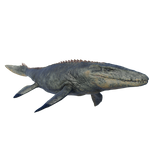

Useful Website
The carnivorous Mosasaurus is one of the largest marine reptiles in history, growing up to nearly 18m in length. Mosasaurus’ rows of sharp teeth, powerful paddle-like limbs and excellent vision make it an efficient predator, feeding on fish, cephalopods and other marine reptiles. Its name translates to ‘lizard of the Meuse River’, in reference to the location of its discovery.
